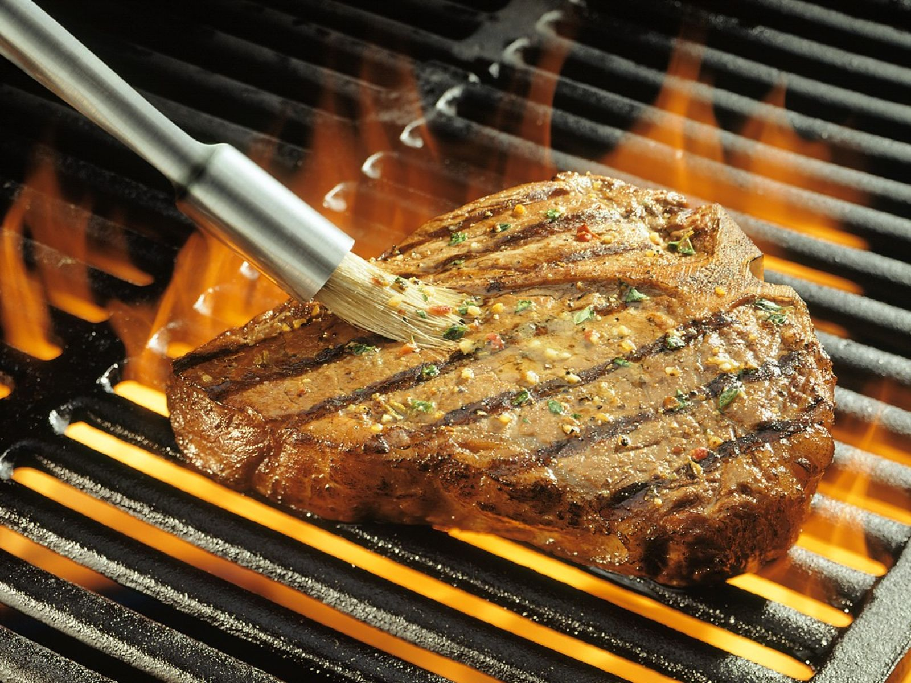

Rock's T-Bone Steaks

Description
This seasoning makes any steak awesome. This is the best. It doesn't overpower the steak. I can't eat a steak out anymore because I always compare it to this seasoning.
Ingredients
- 4teaspoons salt, or to taste
- 2 teaspoons paprika
- 1 ½ teaspoons ground black pepper
- ¾ teaspoon onion powder
- ¾ teaspoon garlic powder, or to taste
- ¾ teaspoon cayenne pepper, or to taste
- ¾ teaspoon ground coriander, or to taste
- ¾ teaspoon ground turmeric, or to taste
- 4 (16 ounce) t-bone steaks, at room temperature
Steps
- Preheat an outdoor grill for high heat, and lightly oil the grate. Stir the salt, paprika, black pepper, onion powder, garlic powder, cayenne pepper, coriander, and turmeric together in a small bowl; set aside.
- Rub the steaks on all sides with the seasoning mixture. Cook on the preheated grill to your desired degree of doneness, 3 to 3 1/2 minutes per side for medium-rare. An instant-read thermometer inserted into the center should read 130 degrees F (54 degrees C).